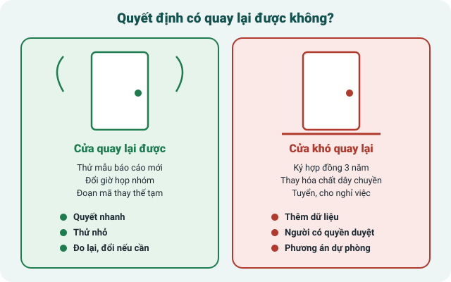

K3 · Giải quyết vấn đề và ra quyết định › Bậc 4 Thành thạo
Ra quyết định khi thiếu thông tin và nói rõ mình đang giả định gì
Bài này làm Tờ 2: Phiếu quyết định. Mẫu in. Bài nối tiếp Mô tả vấn đề và đưa phương án (Bậc 2).
1. Mục tiêu
- Phân loại quyết định: dễ đảo ngược hay khó đảo ngược, rồi chọn mức thông tin cần có.
- Viết phiếu quyết định: giả định, tín hiệu đổi ý, phương án dự phòng, ngày xem lại.
2. Khởi động truy xuất
- Sơ đồ tác động có ba thứ cần nhìn thấy. Đó là gì?
- Vì sao phải nói trước về độ trễ khi trình đề xuất?
Đáp án
- Tác động dây chuyền, vòng lặp, độ trễ.
- Để mọi người không bỏ giải pháp tốt khi tuần đầu chưa thấy kết quả.
Xem lại: Nhìn vấn đề theo hệ thống.
3. Giải thích
Ở vị trí senior, bạn thường phải quyết khi chưa đủ dữ liệu. Chờ đủ thì thường đã muộn. Kỹ năng ở đây là quyết có kỷ luật.
Bước 1. Phân loại quyết định.
- Dễ đảo ngược: sai thì quay lại được, ít tốn. Ví dụ: thử một mẫu báo cáo mới. Quyết nhanh, thử nhỏ.
- Khó đảo ngược: sai thì tốn kém hoặc không sửa được. Ví dụ: ký hợp đồng 3 năm, chọn hóa chất mới cho dây chuyền. Cần thêm thông tin và người duyệt.
Bước 2. Ghi giả định. Viết ra điều bạn đang tin là đúng mà chưa kiểm được. Kèm mức tự tin: cao, vừa, thấp.
Bước 3. Đặt tín hiệu đổi ý. Trả lời câu: "Nếu thấy điều gì, mình sẽ đổi quyết định?" Viết trước, khi đầu óc còn khách quan.
Bước 4. Tưởng tượng thất bại. Giả sử 3 tháng sau quyết định này thất bại. Lý do có thể là gì? Mỗi lý do chính cần một phương án dự phòng.
Bước 5. Hẹn ngày xem lại. Ghi ngày cụ thể để so kết quả với giả định.

Nói rõ khi trình. Hãy tách ba phần: điều đã biết, điều đang giả định, điều chưa biết. Người duyệt sẽ tin bạn hơn, vì họ thấy rủi ro thật.
Tờ 2. Phiếu quyết định
- Quyết định gì, hạn khi nàoDễ hay khó đảo ngược.
- Đã biết · Giả định · Chưa biếtMỗi giả định có mức tự tin.
- Tín hiệu đổi ýThấy gì thì đổi.
- Nếu thất bại, vì sao?Mỗi lý do chính có dự phòng.
- Ngày xem lạiSo kết quả với giả định.
Sai không đáng sợ bằng sai mà không học được gì. Phiếu quyết định giúp bạn học từ cả lần đúng và lần sai.
4. Ví dụ tại nơi làm việc Việt Nam
Tình huống giả định. Anh Tùng là trưởng nhóm kỹ thuật cấp cao ở một công ty phần mềm tại Hà Nội. Khách cần một tính năng trước ngày 20. Thư viện mã đang dùng có lỗi, nhà phát triển chưa trả lời.
Anh có hai lựa chọn. Chờ bản sửa lỗi, hoặc tự viết đoạn thay thế mất 3 ngày.
Anh phân loại: tự viết đoạn thay thế là dễ đảo ngược. Khi có bản sửa, nhóm có thể bỏ đoạn đó.
Anh ghi phiếu. Giả định: đoạn thay thế không ảnh hưởng phần thanh toán (tự tin vừa). Chưa biết: bao giờ có bản sửa. Tín hiệu đổi ý: nếu kiểm thử thấy lỗi ở thanh toán, dừng và báo khách ngay. Dự phòng: giao bản không có tính năng phụ, hẹn bổ sung. Ngày xem lại: ngày 15.
Ngày 15, kiểm thử đạt. Nhóm giao đúng hạn.
Vì sao cách này tốt: anh không chờ đủ thông tin cho một quyết định dễ quay lại. Anh viết tín hiệu đổi ý trước. Khách và cấp trên thấy rõ rủi ro.
5. Thực hành
Tình huống giả định. Bạn là chuyên viên mua hàng chính ở một chuỗi nhà hàng tại TP.HCM. Nhà cung cấp rau cũ hay giao trễ. Một nhà cung cấp mới chào giá thấp hơn 8% nếu ký hợp đồng 2 năm. Bạn chưa từng làm với họ.
Phân loại quyết định. Viết phiếu: giả định, tín hiệu đổi ý, một lý do thất bại và dự phòng, ngày xem lại.
Gợi ý 1
Hợp đồng 2 năm có dễ quay lại không? Có cách nào biến nó thành quyết định dễ quay lại hơn?
Gợi ý 2
Thử đặt một phần đơn hàng trước khi ký dài hạn thì sao?
Lời giải mẫu
- Phân loại: ký 2 năm là khó đảo ngược. Tách thành bước nhỏ: đặt thử 30% lượng rau cho 2 chi nhánh trong 6 tuần.
- Giả định: nhà cung cấp mới giao đúng giờ (tự tin thấp, chưa có dữ liệu).
- Tín hiệu đổi ý: giao trễ quá 2 lần trong 6 tuần, hoặc rau không đạt kiểm tra đầu vào.
- Nếu thất bại, vì sao? Họ không đủ xe vào giờ cao điểm. Dự phòng: giữ nhà cung cấp cũ cho 70% còn lại.
- Ngày xem lại: cuối tuần thứ 6, rồi mới đề xuất ký dài hạn.
(Số liệu là giả định.)
6. Tự kiểm tra
Chọn đáp án. Mỗi lựa chọn đều có giải thích.
Câu 1. Quyết định nào khó đảo ngược nhất?
-
Chưa đúng. Sai thì đổi lại ngay tuần sau, gần như không tốn gì.
-
Chưa đúng. Đây là thử nghiệm nhỏ, dừng được bất cứ lúc nào.
-
Đúng. Đúng. Sai có thể hỏng hàng, ảnh hưởng an toàn, và khó quay lại nhanh.
Câu 2. "Tín hiệu đổi ý" nên được viết khi nào?
-
Đúng. Đúng. Viết trước giúp bạn không tự bào chữa khi kết quả bắt đầu xấu.
-
Chưa đúng. Lúc đó ta dễ tìm lý do để giữ quyết định cũ.
-
Chưa đúng. Cảm giác dễ bị ảnh hưởng bởi công sức đã bỏ ra, nên khó khách quan.
Câu 3. Khi trình quyết định cho cấp trên, cách nào tốt nhất?
-
Chưa đúng. Giấu giả định làm cấp trên không thấy rủi ro thật và mất lòng tin khi có sự cố.
-
Đúng. Đúng. Người duyệt thấy rủi ro thật và quyết được mức chấp nhận.
-
Chưa đúng. Với nhiều quyết định, chờ đủ thông tin thì đã quá muộn.
Câu 4. Bạn phải chọn nhà cung cấp mới cho hợp đồng dài hạn nhưng chưa có dữ liệu. Bước nào hợp lý?
-
Chưa đúng. Quyết định khó đảo ngược mà dựa trên giả định tự tin thấp là rủi ro lớn.
-
Đúng. Đúng. Bạn biến quyết định khó quay lại thành bước nhỏ dễ quay lại.
-
Chưa đúng. Không quyết cũng là một quyết định, và cũng có rủi ro riêng.
7. Phản tư
- Lần gần nhất bạn chờ thêm thông tin, quyết định đó có thật sự khó đảo ngược không?
- Bạn hay quên ghi phần nào nhất: giả định, tín hiệu đổi ý, hay ngày xem lại?
8. Áp dụng thật
Trong 7 ngày tới, chọn một quyết định bạn đang cân nhắc. Làm Tờ 2. Đặt lịch nhắc vào ngày xem lại, rồi ghi kết quả vào phiếu.
9. Siêu dữ liệu
| skill | K3 · Giải quyết vấn đề và ra quyết định |
|---|---|
| level | Bậc 4 · Thành thạo |
| group | N4 |
| framework_map | WEF: Analytical thinking; CSfW: 3b Make decisions; 3c Identify and solve problems; SkillsFuture CCS: Decision Making; Problem Solving; NACE: Critical Thinking; LifeComp: L2 Critical thinking (chỉ dẫn chiếu) |
| updated | 2026-11-14 |
Hoàn thành bài
Đánh dấu đã học để site gợi ý lịch ôn sau 1, 3 và 7 ngày. Dữ liệu chỉ lưu trên máy của bạn.
Lịch ôn gợi ý: